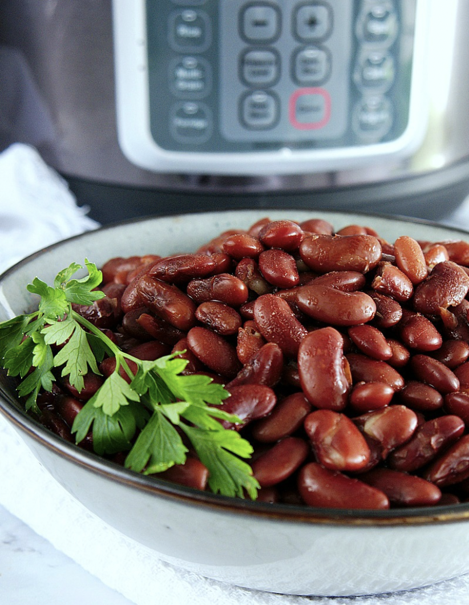

Instant Pot Kidney Beans

Dried kidney beans cooked to perfection in less time than it took to complete the first Odin recipes project.
Ingredients
- Kidney beans
- Water or chicken stock
- Place dried beans in steamer basket.
- Cover beans with water, chicken broth, or combination of both.
- Pressure cook on HIGH for 25 minutes.
- Natural release for 15 minutes, then manual release.